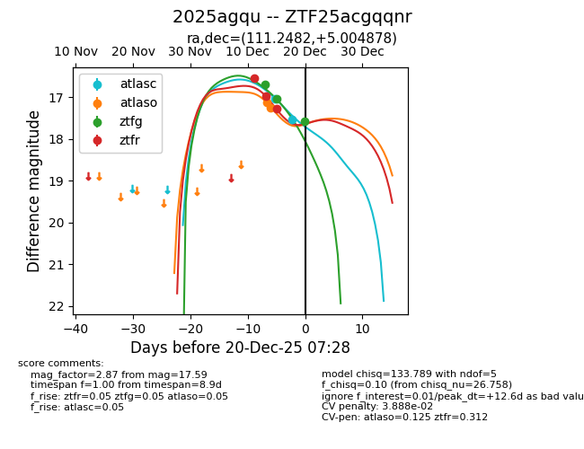
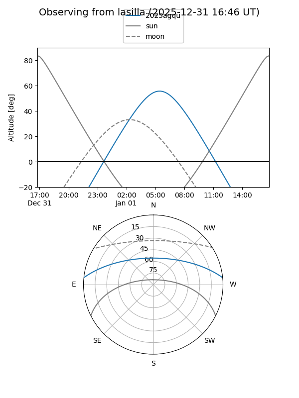
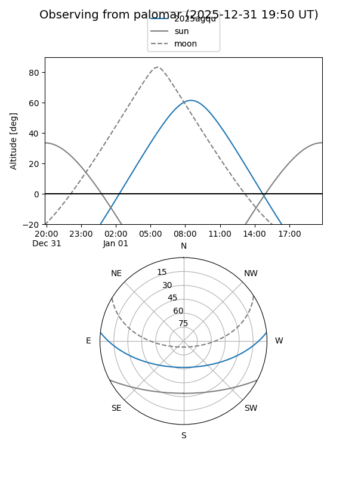
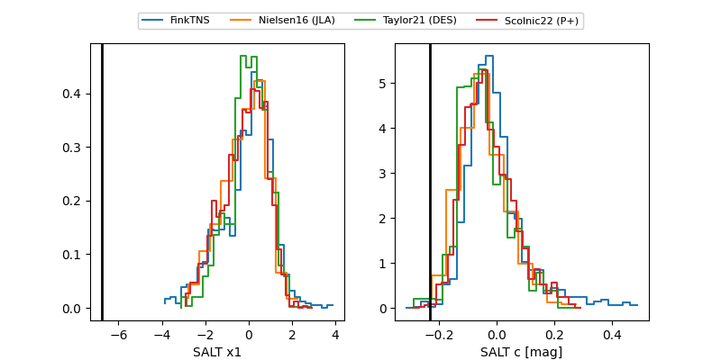

2025agqu
Target 2025agqu at 2025-12-21 14:42
Aliases and brokers:
FINK: fink-portal.org/ZTF25acgqqnr
Lasair: lasair-ztf.lsst.ac.uk/objects/ZTF25acgqqnr
ALeRCE: alerce.online/object/ZTF25acgqqnr
TNS: wis-tns.org/object/2025agqu
YSE: ziggy.ucolick.org/yse/transient_detail/2025agqu
alt names
ZTF25acgqqnr (ztf,fink_ztf)
2025agqu (tns,yse)
Coordinates:
equatorial (ra, dec) = 111.2482,+5.00488
equatorial (HMS+DMS) = 07:24:59.57,+05:00:17.56
galactic (l, b) = (212.2707,+9.73689)
Flags:
likely cv
Photometry:
last atlasc=17.53, atlaso=17.79, ztfg=17.59, ztfr=17.28
2 atlasc, 3 atlaso, 3 ztfg, 3 ztfr detections
Lightcurve

Visibility


Additional plots
